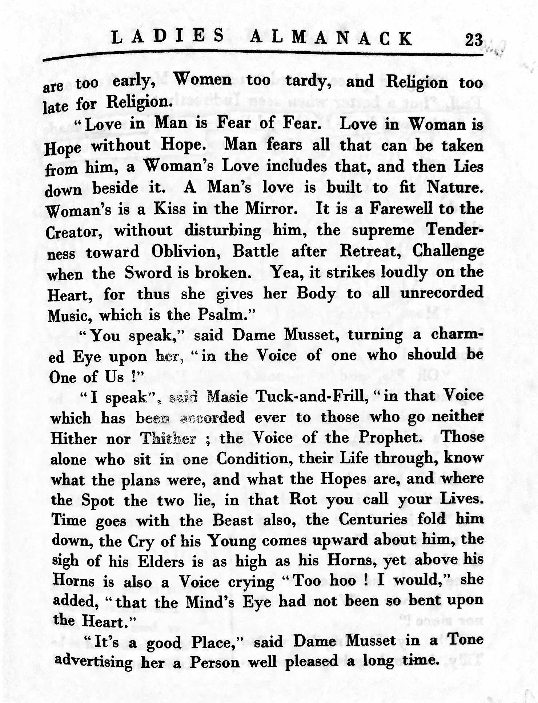
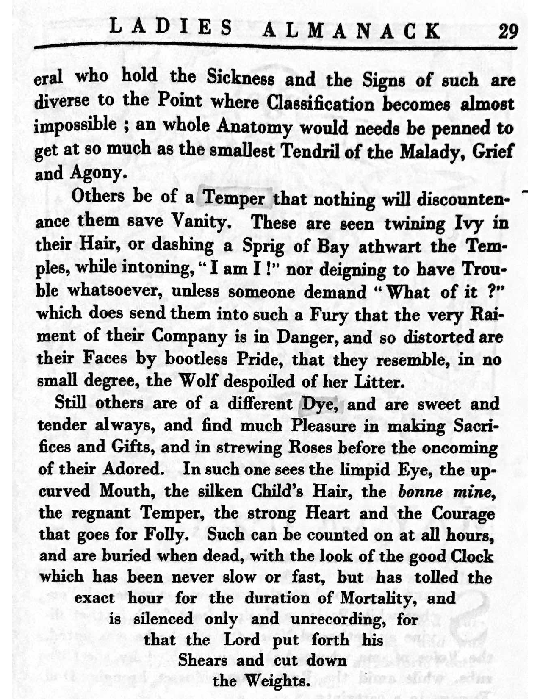

Ladies Almanack
From Glossipedia, the free glossography
Background
The Ladies Almanack is a satirical work by author Djuna Barnes that addresses the lives openly-homosexual women in the 1920s. Modeled after a book of hours, the Almanack follows the conversations of a lesbian woman named Dame Musset in an exploration of the lesbian counter-culture of France. Most chapters follow the structure of a tea-time dialogue between women, but there are also love letters, zodiacs, songs, and more mixed throughout.[needs citation]
Important "Glossed" Sections by Month
January

The month of January introduces us to the character of Patience Scalpel, the antithesis of Dame Musset and the ideals that she stands for. Patience is direct and to the point; she makes herself heard from the very start of the chapter. References to a “surgical Instrument” in order to describe her cutting and derisive nature embody the goal of Djuna Barnes to present Patience’s ideals as strikingly different from Dame Musset’s. Barnes’ characters are loosely based off of women that gathered at Natalie Barney’s salon. Patience Scalpel is based off of Mina Loy, one of the woman Barnes frequently engaged in conversation with. (See:) The events of Barnes’ life are vital to understanding Ladies Almanack, as many of the circumstances and characters in the novel come straight from Barnes’ personal life. The reference to “Apple Blossom” in this chapter implies symbolism that Barnes uses to better define what Patience Scalpel represents. According to A Dictionary of Literary Terms, the term Apple represents “sexual love,” and implies an obvious biblical reference to Adam and Eve in the Garden of Eden. This could be seen as representing the core religious values of marriage between a man and a woman, ideals that Patience Scalpel clearly stands for.
February

Insert February gloss here
March
The first paragraph of page 23 addresses the differences between a woman’s love and a woman’s love for woman. Masie Tuck-and-Frill, the speaker, states that “A Man’s love is built to fit Nature,” signaling the traditional love between a man and a woman. According to Ferber’s Dictionary of Literary Symbols, Nature often represents a marriage-making force, on that produces new generations of life. In this sense, love between men and women is natural as it fulfills nature’s requirement to create new life. Masie Tuck-and-Frill says that a woman’s love for a woman is like a “Kiss in the Mirror,” which could mean many things. The Literary Symbols Dictionary suggests that a mirror could represent either a descent into narcissism, a role-model figure, or simply a reflection. Masie Tuck-and-Frill was likely referring to a combination of other woman as both a reflection of women and a role-model, depending on the circumstances surrounding the love.
April
Insert April gloss here
May
Insert May gloss here
June Insert June gloss here
July
Insert July gloss here
August
Insert August gloss here
September
Insert September gloss here
October
Insert October gloss here
November
Insert November gloss hereDecember
Insert December gloss here